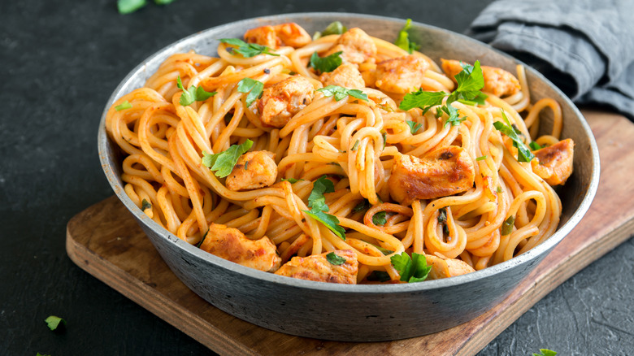

Spaghetti

Finished Spaghetti Meal
Spaghetti is one the most popular meal in the whorld, it is easy to
prepare and it's yummy, spaghetti can be into a pasta or can be eaten with
sauce, hot sauce
INgredients
- 1 pound spaghetti
- 2 pound lean ground beef
- 1 onion Mince
- 1 (6 ounce) can tomato paste
- 2 (10.75 ounce) can condense tomato soup
- 2 1/2 cup of water
Steps
-
Bring a large pot of lightly salted water to a boil. Add pasta and cook
for 8 to 10 minutes or until al dente; drain.
-
In a large skillet over medium heat, cook ground beef with onion until
meat is brown. Drain. Return meat mixture to pan with tomato paste,
tomato soup and water. Cook, stirring, until heated through and
thickened, 5 to 15 minutes. Serve over cooked pasta.